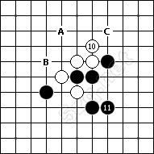

五子棋是一種兩人對弈的純策略型棋類遊戲，通常雙方分別使用黑白兩色的棋子，輪流下在棋盤直線與橫線的交叉點上，先在橫線、直線或斜對角線上形成5子連線者獲勝。因為棋子在落子後不能移動或拿掉，所以也可以用紙和筆來進行遊戲。
該進攻時，不要防守。
越是積極的進攻，越容易獲得取勝的機會。當你的對手走棋不積極時，你不必跟著他走棋，而是要考慮自己的棋是否可以進攻。如圖1，白10形成眠三，看起來為下一步進攻做好了準備；但如果你仔細計算，會發現白棋的進攻並沒有連續性。因此，我們認為白棋並不積極，黑棋可以落子11形成攻擊。有很多棋手會跟著擋在11-C，雖然這不是壞著，但在當前情況下，完全沒有必要，這個時候，你應該去進攻而不是防守。 白10應該走A或B點，這樣的行棋會更加積極，如此，黑棋就不能走11位攻擊了，而是要跟著白棋去防守。
